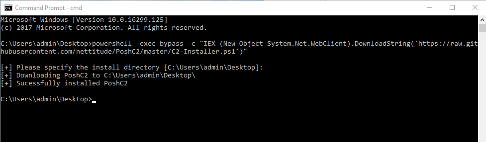
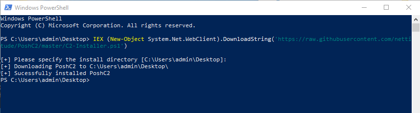

Getting Started¶
PoshC2 can be installed on almost any operating system post Windows XP, for example Windows 7, Windows 8, Windows 10, Server 2008, 2012, 2016.
PyshC2 can be installed on most linux based systems that are capable of running Python. We have testing on a variation of Kali and Ubuntu based systems.
Personally, we would recommend Either Ubuntu or Windows 10 which come with Powershell v5 by default. If you are using Windows Defender or any other host Anti-Virus it is recommended that you add an exclusion on the folder or location of the PoshC2 install and its sub directories where you will use PoshC2. To install PoshC2, we have generated a simple one liner that can be called from either Powershell or Command prompt.
To install PyshC2 on Ubuntu from a Terminal run the following:
curl -sSL https://raw.githubusercontent.com/nettitude/PyshC2/master/Install.sh | bash
To install from Command prompt run the following:
powershell -exec bypass -c "IEX (New-Object System.Net.WebClient).DownloadString('https://raw.githubusercontent.com/nettitude/PoshC2/master/C2-Installer.ps1')"
Screenshot of successful install using Command prompt:
{kind=link}
To install from Powershell run the following command:
IEX (New-Object System.Net.WebClient).DownloadString('https://raw.githubusercontent.com/nettitude/PoshC2/master/C2-Installer.ps1')
Screenshot of successful install using Powershell:
{kind=link}
Create Firewall Rules
If you are not just running locally, ensure you add a new firewall rule for either HTTP or HTTPS depending on what protocol you are using. You can do this on the command line with “netsh.exe” if you prefer:
netsh.exe advfirewall firewall add rule name="PoshC2 HTTPS" dir=in action=allow protocol=TCP localport=443
*Optional - Install Java JDK*
If you want to take full advantage of the Java Applet/Jar payloads for execution, then download and install Java JDK as per the directions from Oracle. Please note, this is only an optional extra and will not stop PoshC2 from generating all other payloads.